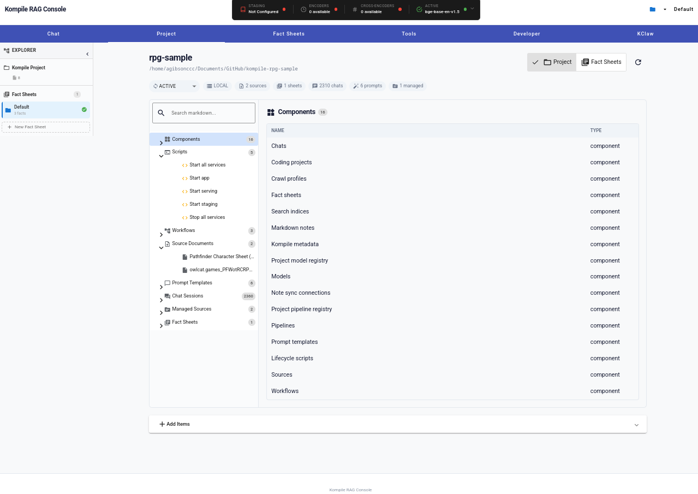
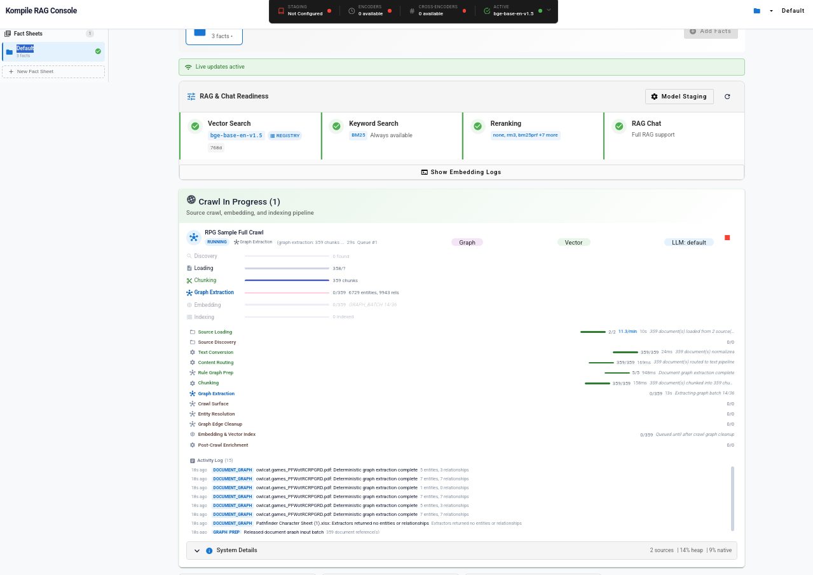

Beyond RAG
Part 2: Dissecting Documents
From Raw Email to Knowledge Graph
Adam Gibson • Kompile • 2026
Part 2 picks up where Part 1 left off. In Part 1, we used Elthoria to show that structured data beats RAG for game state -- bonus stacking, grid positions, NPC stats. Now the question is: does that same insight scale beyond games? Can we extract structure from messy, real-world documents? We'll answer that by dissecting something everyone has: email.
From Elthoria to the Enterprise
Part 1: Game State
Elthoria proved that structured datadeterministic queries .
196 MCP Tools
4 Grounding Layers
ANTLR Grid DSL
"What's Kael's AC?" → query the database , not a vector index
Part 2: Real-World Documents
But real data isn't pre-structured.extract that structure?
Email Extraction
Knowledge Graphs
12 Graph Algorithms
"Who emailed whom about Project X?" → traverse the graph
This is the bridge slide. Part 1 showed Elthoria where the game database already has structured data -- NPC stats, bonus types, grid positions. The AI queries it through MCP tools. But most enterprise data isn't pre-structured. Emails, PDFs, Slack threads -- they arrive as unstructured text. Part 2 shows how Kompile extracts structure from these documents and builds queryable knowledge graphs. Same principle: give the AI structured data to work with instead of making it search through text blobs.
The Elthoria Lesson, Generalized
Elthoria:
Structured DB ──── MCP Tools ──── AI queries game state
(pre-built) (typed access) (deterministic answers)
Enterprise:
Raw Documents ──── ??? ──── MCP Tools ──── AI queries knowledge
(unstructured) (this talk) (typed access) (deterministic answers)
The ??? is the extraction pipeline :raw documents → entities + relationships → knowledge graph
Elthoria had a pre-built database. Enterprise data doesn't. The missing piece is the extraction pipeline -- turning raw documents into structured entities and relationships that live in a knowledge graph. Once you have that graph, the same pattern applies: the AI queries structured data through typed tool interfaces. The rest of this talk fills in that question mark.
Kompile: The Extraction Platform

16 components •
2,310 chat sessions •
Fact sheets, crawl profiles, search indices, pipelines, model registry
This is Kompile's RAG Console running live. The project view for "rpg-sample" shows the full platform: 16 components spanning chats, coding projects, crawl profiles, fact sheets, search indices, markdown notes, model registry, pipelines, prompt templates, lifecycle scripts, sources, and workflows. The left panel shows 5 scripts (Start all services, Start app, Start serving, Start staging, Stop all services), 3 workflows, 2 source documents (a Pathfinder character sheet and Owlcat games PDF), 6 prompt templates, 2,310 chat sessions, 2 managed sources, and 1 fact sheet. This is the platform that fills in the "???" from the previous slide -- it turns raw documents into structured knowledge.
The Extraction Pipeline — Live

359 docs loaded →
359 chunks →
6,729 entities, 9,943 relationships →
Graph + Vector + LLM
This is the extraction pipeline running live on RPG source documents. The "RPG Sample Full Crawl" is processing 2 sources through 359 documents. The pipeline stages run concurrently: Source Loading (2/2 sources, 359 docs at 11.3/min), Text Conversion (359/359 normalized), Content Routing (359/359 routed to text pipeline), Rule Graph Prep (5/5 document graph extraction complete), Chunking (359/359 chunked into 359 chunks). Graph Extraction is in progress -- already 6,729 entities and 9,943 relationships extracted from the first batches. The three output paths are visible: Graph, Vector, and LLM. The activity log at the bottom shows deterministic graph extraction completing per-document: "5 entities, 3 relationships", "7 entities, 7 relationships" -- exactly the pattern we'll walk through for emails. This is the pipeline that turns raw documents into the structured knowledge graphs we'll explore in this talk.
What is Kompile?
The Sovereign Modular AI StackModels • Knowledge • Applications
Three Pillars
Models
Model conversion & servingkompile model convert --inputFile=model.onnx
Knowledge
Crawl → Extract → Structurekompile crawl --source=inbox --graph=true
Applications
RAG apps, agents, pipelineskompile init → crawl → chatGraalVM native image support
Kompile is three things in one. The Models pillar handles model conversion (TensorFlow, ONNX, Keras to SameDiff), local embedding models (bge-base-en-v1.5, arctic-embed), and multi-provider LLM integration via Spring AI. The Knowledge pillar -- which is the focus of this talk -- crawls data sources (email inboxes, PDFs, Office docs, Slack, Confluence, Jira, Notion, Discord, Reddit, Google Workspace, OneDrive, Gmail), extracts structure, and builds knowledge graphs with vector indices. The Applications pillar puts it all together: Spring Boot RAG applications with Angular frontend, MCP tool servers, REST APIs, CLI tools, and pipeline execution. The workflow is: kompile init to scaffold, kompile crawl to ingest, kompile chat to query.
The Project Workflow
Everything is project-oriented — init assesses your infra, crawl builds your knowledge
$ kompile init-project ← interactive wizard or preset
1. What LLM? CLI agent (Claude/Codex/Gemini) · OpenAI · Anthropic · local-only · none
2. What embeddings? Anserini/SameDiff (local) · OpenAI · Sentence Transformer · PostgresML
3. What vector store? Anserini (Lucene HNSW, default) · pgvector · Chroma
4. What compute? CPU · CUDA · ZLUDA · Hexagon NPU · Google TPU
5. Hardware check RAM, CPUs, GPU → auto-tunes batch sizes, heap, parallelism
→ Generates pom.xml, application.properties, config/*.json, scripts/, data/
→ Builds the app (mvn package) → ready to run
$ kompile app crawl start ./docs/ https://wiki.example.com ← point at your data
Sources auto-detected: directories, URLs, email, Excel, etc.
Pipeline: Load → Chunk → Embed → Index + Graph Extract → Knowledge Graph
Optional: --graph --multimodal --vlm --fact-sheet="Q3 Finance"
$ kompile chat ← query your structured knowledge
init gives you end-to-end infrastructure in one step.No Dockerfiles, no YAML, no cloud console — one command, one project, everything configured.
Kompile is project-oriented. The init-project command is an interactive wizard (or can be driven by presets and flags) that assesses what you need for end-to-end AI infrastructure. It walks through your LLM provider (local CLI agents like Claude Code or Codex need no API key; hosted providers need one), your embedding model (local SameDiff models like bge-base run on-device, OpenAI embeddings call the API), your vector store (Lucene HNSW is the default and needs no external server, pgvector needs PostgreSQL, Chroma needs its server), and your compute backend. HardwareAutoConfigurator.autoConfigure() detects your RAM, CPU count, and GPU availability, then tunes batch sizes, heap allocations, and parallelism settings. The output is a complete, buildable Maven project with pom.xml, application.properties, JSON config files for every subsystem, lifecycle scripts, and a data directory structure. Then you crawl: point at your data sources -- directories, URLs, email inboxes, whatever -- and the unified crawl pipeline loads, chunks, embeds, and indexes into your vector store, optionally extracting a knowledge graph in parallel. Crawl output is scoped to a named fact sheet, so you can have separate indices for different domains within the same project. Then you chat -- the AI queries your structured knowledge through MCP tools and vector search.
Data Crawlers
Email
IMAP, Gmail API,
Cloud
Confluence, Jira,
Chat
Slack, Discord,
Documents
PDF, Office, CSV,
Every crawler feeds the same pipeline: CrawlPipelineRouter → native loader → extraction → graph + vectors
Each source type has its own specialized loader that preserves format-specific structure
Kompile ships crawlers for every major data source: email (IMAP, Gmail API, and local formats like MBOX, PST, EMLX), cloud platforms (Confluence spaces and pages, Jira projects with issue links, Notion databases, Google Drive and Workspace), chat platforms (Slack channels and threads with reactions and file attachments, Discord servers), and document stores (PDF, Office via Apache POI, CSV/TSV, OneDrive, local filesystem). Every crawler feeds into the same CrawlPipelineRouter, which dispatches each document to its native loader. The loaders preserve format-specific structure -- email threading headers, Slack message threading and reactions, Jira issue type and priority fields, Confluence page parent-child hierarchies. This is the "???" from the earlier slide: the extraction pipeline that turns raw enterprise data into structured knowledge.
The Structured Data Thesis
"The point isn't how the AI accesses data.structure ."
RAG: Flatten Everything
Email with 3 recipients, thread chain,
attached spreadsheet with formulas
↓
"one text chunk, one vector"
↓
cosine similarity = hope
Structured: Preserve Everything
Email with 3 recipients, thread chain,
attached spreadsheet with formulas
↓
3 PERSON + 1 EMAIL + 1 ATTACHMENT
+ 1 SHEET + 1 CELL + 1 FORMULA
↓
graph traversal = certainty
This is the central thesis of both talks. The value isn't in MCP versus REST versus GraphQL versus any other protocol. The value is in having structured data in the first place. RAG takes a richly structured email with typed recipients, thread chains, and attached spreadsheets with cell-level formulas, and crushes it into a single text chunk and a vector. You're left hoping cosine similarity finds the right chunk when someone asks about cell F14. Structured extraction preserves all of that: 3 PERSON entities with typed relationships, an EMAIL_MESSAGE with threading, an ATTACHMENT linked to a SHEET linked to a CELL with the actual FORMULA expression. Once you have that structure, how you access it -- MCP tool, REST endpoint, Cypher query -- is an implementation detail.
MCP: Power and Cost
What MCP Gives You
Tool discovery — the AI finds what it can do
Typed parameters & returns
Schema-driven: LLM knows how to call each tool
Standard protocol across providers
Elthoria: 196 tools across 19+ categories
What MCP Costs You
~7,000 tokens just for tool schemasEvery request carries the full schema set
196 tools × 35 tokens/tool avg = massive overhead
Eats into context window before the AI even starts
Token overhead is the #1 real-world pain pointScales linearly with tool count
MCP is powerful -- it gives the AI typed tool discovery, structured parameters, and a standard protocol. Elthoria uses 196 MCP tools. But there's a real cost: the full tool schema set consumes roughly 7,000 tokens. That's 7,000 tokens sent with every single request, before the AI even processes the user's message. With 196 tools averaging 35 tokens per schema, you're burning a significant chunk of your context window just on tool definitions. This scales linearly -- more tools means more overhead. At GPT-4-class pricing, this is a meaningful cost per request. And it's not just money -- those tokens compete with the actual conversation context for space in the window.
Kompile's Token Optimization Tools
Actual MCP tools the AI calls to manage its own token footprint
Tool What the AI Does What Happens
activate_toolsaction=list → see available groupsaction=describe, group=network → preview toolsaction=activate, group=delegation → unlock toolsOnly 17 core tools visible by default33+ tools organized into 8 groups ~7000 → ~2000 tokens (70%)
fetch_resultresult_id=abc12345offset=0, limit=200Retrieve cached result by handle Results >8000 chars auto-cachedUUID handle + preview returned instead 86-94% context reduction
search_toolsquery="graph algorithm"Server-side: lightweight keyword search Returns name + description onlyNo schemas — minimal tokens
describe_toolsnames=["pagerank","louvain"]Batch fetch full schemas on demand Full input schema only for requested toolsNever loads schemas the AI won't use
execute_toolname="pagerank", args={...}Invoke any tool by name, even if hidden Reflection-based dynamic invocationTools don't need to be in visible set
These are actual MCP tools the AI can call -- not configuration knobs. activate_tools is the CLI-side gatekeeper: DynamicToolManager organizes 33+ tools into 8 groups (search, workflow, network, delegation, knowledge, process, advanced, custom) with 17 core tools always visible (read, write, edit, grep, glob, bash, list, fetch_result, activate_tools, patch, explore, memory, transcript_search, conversation_import, code_search, code_graph, local_code_index). The AI calls activate_tools with action=list to see what's available, action=describe to preview a group, and action=activate to unlock it. This alone cuts the default schema from ~7000 tokens to ~2000. fetch_result is the result-caching tool: when any tool output exceeds 8000 characters, ToolResultReferenceCache stores the full content and returns a UUID handle with a 500-character preview. The AI calls fetch_result with that handle to retrieve specific line ranges. The arxiv 2511.22729 paper reports 86-94% context reduction with this pattern. On the server side (kompile-app), DynamicToolsetsMetaTool provides search_tools, describe_tools, and execute_tool -- the DYNAMIC mode equivalent. In DYNAMIC mode, only these three meta-tools are exposed. The AI calls search_tools with a keyword query, gets lightweight results (name + description, no schemas), then calls describe_tools for the full input schema of specific tools, then execute_tool to invoke them. This is the three-step pattern: discover, inspect, execute.
activate_tools: Group-Based Discovery
Always visible (17 core tools):
read, write, edit, grep, glob, bash, list, fetch_result, activate_tools,
patch, explore, memory, transcript_search, conversation_import,
code_search, code_graph, local_code_index
Unlocked on demand via activate_tools:
search → code_search, search, tool_call_catalog
workflow → todowrite, todoread, memory, config_archive, test_milestone
network → webfetch, websearch
delegation → task, quorum_task, multi_task, role_manager, skill_manager
knowledge → transcript_search, conversation_import, resume
process → process, edit_coordinator
advanced → performance_harness, patch
custom → user-defined tools from ~/.kompile/tools/
// DynamicToolManager.java - per-session group activation
private static final Set<String> CORE_TOOLS = Set.of(
"read", "write", "edit", "grep", "glob", "bash", "list",
"fetch_result", "activate_tools", "patch", "explore", "memory",
"transcript_search", "conversation_import",
"code_search", "code_graph", "local_code_index");
// AI calls: activate_tools(action="activate", group="delegation")
// → adds task, quorum_task, multi_task, role_manager, skill_manager
// → "Call tools/list to see the updated list"Here's how it actually works. DynamicToolManager maintains a per-session activatedGroups set backed by a ConcurrentHashMap. The 17 core tools are always in the visible tool list regardless of what's activated. The remaining tools are organized into 8 groups. When the AI needs web access, it calls activate_tools with action=activate and group=network -- this adds webfetch and websearch to the active set and tells the AI to re-request tools/list. The custom group is populated dynamically from user-defined tool definitions in ~/.kompile/tools/ and .kompile/tools/. Any tools not assigned to a group are treated as ungrouped and always active. The key insight: the AI only pays the token cost for the tools it actually needs in a given session. A session that only reads and edits code never loads the delegation, network, or advanced tools.
Behind the Tools: Optimization Infrastructure
Layer Class What It Does
Schema ToolSchemaOptimizer4-level adaptive compression: NONE → MODERATE (200ch desc) → AGGRESSIVE (100ch, strip params) → COMPACT (60ch, collapse objects)optimizeAdaptive(tools, tokenBudget) tries each level until it fits
Results ToolResultReferenceCacheThreshold: 8000 chars → store full content, return UUID handle + 500ch preview15min TTL, 500 entries max, LRU eviction
Responses ToolResponseOptimizer6 strategies: plain text, JSON (arrays → 20 items), code (CodeTokenCompressor), search results (dedup), CLI output (strip progress bars, downloads, spinners)compressObservation: 60-91% on build/test output (RTK research)
Code CodeTokenCompressorLanguage-aware: strips license headers, collapses imports to [N imports], collapses long Javadoc to first sentence, extracts API surfaceDetects Java, Python, JS, TS, Go, Rust, C/C++, Ruby, Scala + more
Config McpOptimizationConfigCentral config: metaToolMode (DIRECT/DYNAMIC/HYBRID), ragMaxDocs=3, ragMaxContentChars=2000, compressionThreshold=4000REST API at /api/config/mcp-optimization — live reload via Spring events
Behind the callable tools sits a multi-layer optimization infrastructure. ToolSchemaOptimizer runs before schemas leave the server -- it has four compression levels and an adaptive mode that tries each level until the total token estimate fits within a budget (estimated as chars/4). ToolResultReferenceCache is the engine behind fetch_result -- any tool output over 8000 characters gets stored with a UUID handle, the AI receives a 500-character preview, and fetch_result retrieves specific line ranges on demand. ToolResponseOptimizer handles six different output types with specialized compression: plain text gets head+tail truncation, JSON arrays get capped to 20 items, source code goes through CodeTokenCompressor (which is language-aware for 15+ languages -- strips license headers, collapses import blocks to "[N imports]", collapses Javadoc over 8 lines to the first sentence, and can extract just the API surface in 10-20% of tokens). The compressObservation method specifically targets CLI/build/test output -- stripping progress bars, Maven download lines, npm install noise, and collapsing runs of PASS lines -- achieving 60-91% reduction based on RTK research. McpOptimizationConfig ties it all together, persisted to JSON and editable via REST at /api/config/mcp-optimization with live reload via Spring ApplicationEvents.
REST: The Zero-Overhead Alternative
MCP Tool Call
// Requires tool schema in context
// ~35 tokens per tool definition
{
"name": "graph_search_by_entity",
"arguments": {
"entityName": "Alice Chen",
"maxResults": 5
}
}
AI must have the schema loaded
REST API Call
# Zero schema overhead
# Same operation, same service layer
GET /api/graph/search
?entityName=Alice+Chen
&maxResults=5
POST /api/graph/algorithms/pagerank
{ "factSheetId": 42 }
No tool schema in context window
Same service layer underneath. MCP and REST are two doors to the same room.
Here's the thing: every operation Kompile exposes as an MCP tool is also available as a REST endpoint. The graph search, the PageRank computation, the crawl management -- all accessible via standard HTTP with zero tool schema overhead. REST doesn't need the AI to carry tool definitions in its context window. An agentic system can call REST endpoints directly, parse the JSON response, and pass it into the LLM's context as needed. The trade-off is that MCP gives the AI self-directed tool discovery, while REST requires the orchestration layer to know which endpoint to call. But in many architectures -- especially those with a fixed set of operations -- REST is simpler, cheaper, and just as effective. The key insight: both MCP and REST hit the same Spring service layer underneath. The business logic is the same.
The Dual-Access Pattern
Both Kompile and Elthoria expose everything as both a tool and an endpoint
MCP Client REST Client
(AI agent, Claude, etc.) (curl, frontend, scripts)
│ │
MCP Transport (SSE) HTTP / JSON
│ │
┌──────┴──────┐ ┌──────┴──────┐
│ MCP Tool │ │ REST │
│ @Tool │ │ @RestController │
└──────┬──────┘ └──────┬──────┘
│ │
└──────────────┬───────────────────────┘
│
┌────────┴────────┐
│ @Service Layer │
│ (shared logic) │
└──────────────────┘
│
┌──────────┼──────────┐
│ │ │
Graph Store Vector Store Database
RestMcpBridgeManager : auto-converts OpenAPI specs ↔ MCP tool schemas
BuiltInToolDiscoveryService.generateOpenApiSpec() → bridge config → bidirectional access
Write the logic once. The @Service is the source of truth.MCP and REST are just transport layers — pick what fits your use case.
This is the pattern both Kompile and Elthoria use: write the business logic once in a Spring @Service class, then expose it through both an @Tool annotation for MCP and a @RestController for REST. The service layer is the source of truth. The RestMcpBridgeManager takes this further -- it can automatically convert between OpenAPI specs and MCP tool schemas bidirectionally. BuiltInToolDiscoveryService generates an OpenAPI spec from the registered tools, creates a bridge config, and enables the same operation to be called via either protocol. This means you can build your AI agent with MCP for tool discovery during development, then switch critical paths to REST for production where token overhead matters. Or run both simultaneously. The transport is a detail -- the structured data underneath is what matters.
From Platform to Practice
Let's crawl an email inboxand see what structure comes out
Anatomy of an Email
An email isn't a text blob — it's a structured object with typed fields and nested documents
┌─────────────────────────────────────────────────────────────────────────────┐
│ From: Alice Chen <alice@acme.com> ← PERSON entity │
│ To: Sarah Park <sarah@acme.com> ← PERSON entity │
│ Cc: Mike Torres <mike@acme.com> ← PERSON entity │
│ Date: 2026-05-19T14:30:00Z │
│ Subject: Re: Q3 Revenue Forecast Bug ← EMAIL_MESSAGE entity │
│ In-Reply-To: <msg-2847@acme.com> ← REPLIED_TO relation │
│ References: <msg-2841@acme.com> ← thread chain │
│─────────────────────────────────────────────────────────────────────────────│
│ │
│ Hey Sarah, the Q3 revenue forecast has a bug in the commission calc. │
│ Cell F14 in the attached spreadsheet uses VLOOKUP on the old rate table. │
│ It should reference the 2026 rates on Sheet3. - Alice │
│ │
│ 📎 Q3-forecast.xlsx (148 KB) ← ATTACHMENT entity │
│ ├── Sheet1: "Revenue Forecast" ← SPREADSHEET_SHEET │
│ │ └── F14: =VLOOKUP(B14,Sheet2!A:C,3,FALSE) ← CELL / FORMULA │
│ ├── Sheet2: "Old Commission Rates" │
│ └── Sheet3: "2026 Commission Rates" ← the correct table │
└─────────────────────────────────────────────────────────────────────────────┘
Every annotation on the right is an entity or relationship Kompile extracts.
The headers, the people, the thread, the attachment, the sheets, the cell, the formula.
Before we talk about extraction code, look at this email as a data structure. The headers alone give us three PERSON entities with typed relationships (SENT_BY, SENT_TO, CC_TO), an EMAIL_MESSAGE entity with a subject and timestamp, and thread reconstruction via In-Reply-To and References headers. The body is prose -- that's what RAG would chunk and embed. But the attachment is where the business-critical data lives. Q3-forecast.xlsx isn't just a file name -- Apache POI can open it and extract Sheet1 with its cell grid, including cell F14 which contains an actual VLOOKUP formula referencing Sheet2. The bug is that F14 should reference Sheet3 (the 2026 rates), not Sheet2 (the old rates). Every annotation on the right side of this diagram is a typed entity or relationship that Kompile's extraction pipeline produces. None of this requires an LLM -- it's all deterministic parsing of MIME headers and binary file formats.
What is a Knowledge Graph?
Entities connected by typed, directed relationships — not text, not vectors, but structure
A graph is:
Nodes (entities) with properties
Alice Chen type: PERSON
email: alice@acme.com
Edges (relationships) with types
Alice ──SENT_BY ──▶ Email
Email ──HAS_ATTACHMENT ──▶ Q3-forecast.xlsx
A knowledge graph is:
Entities extracted from documents
connected by relationships found
in those same documents .
Not hand-built. Extracted automatically.
Why not just use text search?
Text: "Alice sent an email about Q3"
→ cosine similarity might find it
→ or might find a different Q3 email
Graph: Alice ──SENT_BY──▶ Email
│
HAS_ATTACHMENT
│
Q3-forecast.xlsx
│
CONTAINS_SHEET
│
Sheet1!F14
→ deterministic traversal
→ every hop is typed
→ you get the formula, not "a passage"
For anyone unfamiliar: a knowledge graph is a data structure where entities (people, documents, files, cells) are nodes with typed properties, and the connections between them are directed, labeled edges. Alice SENT_BY this email. This email HAS_ATTACHMENT this spreadsheet. This spreadsheet CONTAINS_SHEET this sheet. This sheet CONTAINS_CELL this cell. Each hop is a typed relationship you can traverse programmatically. Compare this to text search or RAG: searching for "Alice Q3 spreadsheet" via cosine similarity might return the right email, or might return a different Q3 email, or might return a document that mentions Q3 but has nothing to do with Alice's spreadsheet. A graph traversal is deterministic -- you follow typed edges from Alice to her email to its attachment to the specific cell with the bug. There's no similarity threshold, no ranking, no "maybe". Kompile builds these graphs automatically from documents -- you don't hand-build them.
From Email to Cell: The Full Graph
One email produces a graph that traces from people all the way down to individual cell formulas
Alice Chen ─SENT_BY ─┐ Sarah Park ◀─SENT_TO ─┐ Mike Torres ◀─CC_TO ─┐
PERSON │ PERSON │ PERSON │
▼ │ │
┌─────────────────────────────────────┴────────────────────────────┘
│ Re: Q3 Revenue Forecast Bug
│ EMAIL_MESSAGE · 2026-05-19T14:30:00Z
└──────┬──────────────────┬────────────────────────────────────────┘
│ │
REPLIED_TO HAS_ATTACHMENT
│ │
┌──────┴──────┐ ┌──────┴──────────────┐
│ msg-2847 │ │ Q3-forecast.xlsx │
│EMAIL_MESSAGE│ │ ATTACHMENT (148 KB) │
└─────────────┘ └──────┬──────────────┘
│
CONTAINS_SHEET
┌────────────┼────────────┐
│ │ │
┌──────┴──────┐ ┌──────┴──────┐ ┌──────┴──────────────┐
│ Sheet1 │ │ Sheet2 │ │ Sheet3 │
│ "Revenue │ │ "Old Rates" │ │ "2026 Commission │
│ Forecast" │ │ │ │ Rates" │
└──────┬──────┘ └─────────────┘ └──────────────────────┘
│
CONTAINS_CELL
│
┌──────┴─────────────────────────────────┐
│ F14: =VLOOKUP(B14, Sheet2!A:C, 3, FALSE) │ ← The bug is HERE
│ FORMULA entity │ Should reference Sheet3
│ refs: [Sheet2!A:C] │ not Sheet2
└───────────────────────────────────────────┘
6 hops from person to formula. Every node is typed. Every edge is labeled.This is what Kompile's extraction pipeline builds — automatically, from one email.
This is the complete graph from a single email. Three PERSON nodes at the top (Alice, Sarah, Mike) with typed relationships to the EMAIL_MESSAGE. The email links to its parent via REPLIED_TO (thread reconstruction from In-Reply-To headers) and to its attachment via HAS_ATTACHMENT. The attachment -- Q3-forecast.xlsx -- gets dispatched to Apache POI, which extracts three sheets as SPREADSHEET_SHEET entities via CONTAINS_SHEET edges. Sheet1 has cells, and cell F14 becomes a FORMULA entity via CONTAINS_CELL, carrying the actual expression =VLOOKUP(B14,Sheet2!A:C,3,FALSE) and its cell references as properties. Six hops from Alice to the buggy formula. Every hop is a typed, directed relationship. You can traverse this graph forward -- "what did Alice send?" -- or backward -- "which email contained this formula?" -- and the answer is always deterministic. Now the question is: how do we build this graph? What does RAG lose, and what does the extraction pipeline preserve? That's the rest of this talk.
Part I
What RAG FlattensThe information you lose
RAG Sees Text. Emails Have Structure.
What RAG Sees
"Hey Sarah, the Q3 revenue forecast
has a bug in the commission calc.
Cell F14 in the attached spreadsheet
uses VLOOKUP on the old rate table.
It should reference the 2026 rates
on Sheet3. Can you fix it before
the board deck goes out? - Alice"
→ One text chunk, embedded as a vector
→ "Which cell?" lost in embedding
→ "Which spreadsheet?" no attachment link
→ The formula itself? Never extracted.
What's Actually There
From: Alice Chen <alice@acme.com>
To: Sarah Park <sarah@acme.com>
Cc: Mike Torres <mike@acme.com>
Date: 2026-05-19T14:30:00Z
Subject: Re: Q3 Revenue Forecast Bug
Attach: Q3-forecast.xlsx (148 KB)
→ Sheet1!F14: =VLOOKUP(B14,Sheet2!A:C,3,FALSE)
→ Sheet3: "2026 Commission Rates"
→ 3 people, typed relationships
→ Attachment → sheets → cells → formulas
→ The bug IS the formula. It's extractable.
This is the core problem. A RAG system takes this email, strips it to text, chunks it, embeds it, and stores the vector. You've lost everything that matters: who sent it, the attachment, the specific cell reference, and the formula itself. The business-critical information isn't the email body -- it's cell F14 in the attached spreadsheet, which uses a VLOOKUP referencing the wrong rate table. Kompile's loaders extract all of this: the MIME headers give us people and threading, the EmailAttachmentExtractor pulls the .xlsx to a temp file, Apache POI parses it into sheets, rows, cells, and formulas, and the CrawlPipelineRouter dispatches each piece to the right extractor. The formula, the cell reference, the sheet name -- all become first-class entities in the knowledge graph.
Questions RAG Can't Answer
Question
Requires
RAG?
"Who are the most connected people in our org?"
Graph centrality No
"Show me the email thread about the Jenkins outage"
Thread traversal (In-Reply-To chain)No
"Which cell in which spreadsheet has the forecast bug?"
Multi-hop: email → attachment → sheet → cell No
"How does Alice connect to the VP of Engineering?"
Shortest path No
"Find all formulas referencing the old rate table"
Graph query on FORMULA entities No
Every one of these is answerable with a knowledge graph .
Five questions that are completely natural for a user to ask, and completely impossible for a RAG system to answer. The new third row is the key one: "which cell in which spreadsheet has the forecast bug?" requires traversing from email to attachment to sheet to cell -- a four-hop graph traversal. RAG can't do this because it flattened the spreadsheet into text chunks with no cell-level addressability. The fifth row shows the inverse query: find all formulas that reference a specific table. This is a graph filter on FORMULA entities by their expression content. PageRank, thread traversal, shortest path, and typed queries round out the set.
Part II
Dissecting an EmailFrom MIME to metadata
Kompile's Email Loaders
IMAP/POP3
Live mail serversGmail, Outlook, custom IMAP
Local Inbox
MBOX, Maildir, PST, EMLXThunderbird, Apple Mail, Outlook
Gmail API
REST API with OAuth2Labels, threads, attachments
Auto-Discovery
MailboxDiscoveryServiceScans Thunderbird, Evolution, KMail, Geary
Kompile ships four email loading modules. IMAP/POP3 connects to live servers -- Gmail preset, Microsoft OAuth2, any custom IMAP host. Local Inbox handles every common format: MBOX (Thunderbird), Maildir (dovecot), PST/OST (Outlook), EMLX (Apple Mail). Gmail API uses the REST endpoint for users who want label and thread metadata. And Auto-Discovery scans your machine for installed mail clients and their data files automatically -- profiles.ini for Thunderbird, ~/Library/Mail for Apple Mail, Windows paths for Outlook. You don't need to configure paths -- it finds them.
What the Parser Extracts
Every email is parsed by an RFC 2822 / MIME parser — no LLM, just standards
Raw email arrives (IMAP fetch, .mbox file, Gmail API, .eml file)
│
▼
┌─────────────────────────────────────────────────────────────────────────────────┐
│ MIME Parser (RFC 2822) │
│ │
│ Headers Threading │
│ ┌──────────────────────────────┐ ┌──────────────────────────────┐ │
│ │ Subject → "Re: Q3 Forecast" │ │ Message-ID → unique ID │ │
│ │ From → Alice (name+addr) │ │ In-Reply-To → parent msg ID │ │
│ │ To → Sarah │ │ References → full thread │ │
│ │ Cc → Mike │ │ List-Id → mailing list │ │
│ │ Date → ISO-8601 instant │ │ X-Mailer → client app │ │
│ └──────────────────────────────┘ └──────────────────────────────┘ │
│ │
│ Body Attachments │
│ ┌──────────────────────────────┐ ┌──────────────────────────────┐ │
│ │ text/plain preferred │ │ Each extracted to temp file │ │
│ │ text/html as fallback │ │ Routed to native loader: │ │
│ │ (converted to clean text) │ │ .pdf → PDF parser │ │
│ └──────────────────────────────┘ │ .xlsx → Spreadsheet parser │ │
│ │ .docx → Document parser │ │
│ │ .png → OCR (if enabled) │ │
│ └──────────────────────────────┘ │
└─────────────────────────────────────────────────────────────────────────────────┘
│
▼
30+ structured metadata fields + body text + attachment sub-documents
The parser follows the MIME standard -- RFC 2822 for headers, MIME multipart for body structure. It extracts four categories of data. Headers give you identity and routing: who sent it, who received it, when, what subject. Threading gives you conversation reconstruction: Message-ID uniquely identifies every email, In-Reply-To links to the parent, References preserves the full chain. These three fields alone let you rebuild entire conversation threads without any LLM. Body extraction prefers the text/plain part for clean text, falling back to HTML which gets converted to text. Attachments are the key: each one is extracted to a temp file and routed to a format-specific parser -- PDFs go to a PDF parser, spreadsheets to a spreadsheet parser, Word docs to a document parser, images to OCR. Each attachment becomes its own sub-document linked back to the parent email. All of this is deterministic -- just reading standards-defined headers and binary file formats.
The MIME Tree
An email is a tree of nested parts — the parser walks it, extracting each piece
multipart/mixed ← the email envelope
├── multipart/alternative ← body in multiple formats
│ ├── text/plain ← preferred: clean body text
│ └── text/html ← fallback: converted to text
│
├── application/vnd.openxmlformats (xlsx) ← attachment: spreadsheet
│ filename="Q3-forecast.xlsx"
│ │
│ └── Spreadsheet parser opens it:
│ ├── Sheet1: "Revenue Forecast" → rows, cells, formulas
│ ├── Sheet2: "Old Commission Rates" → reference data
│ └── Sheet3: "2026 Commission Rates" → reference data
│
├── application/pdf ← attachment: PDF
│ filename="budget.pdf" → text + tables + annotations
│
└── image/png ← attachment: image
filename="chart.png" → OCR text (if enabled)
Attachments become first-class documents — each parsed by a native, format-aware loader.
An email isn't a flat file -- it's a MIME tree. The top-level multipart/mixed container holds the body (as multipart/alternative with plain text and HTML versions) plus each attachment as a separate MIME part. The parser walks this tree recursively. Body text comes from the text/plain part when available. Each attachment is extracted with its original content type and filename, then dispatched to a format-specific loader. The spreadsheet parser opens the xlsx and extracts individual sheets, rows, cells, and formulas. The PDF parser extracts text, tables, annotations, and form fields. The image loader can run OCR if configured. Each attachment becomes its own sub-document in the pipeline, with metadata linking it back to the parent email -- so you can always trace an attachment to the email that contained it.
30+ Metadata Fields per Email
Everything RAG throws away — all extracted deterministically from headers
Identity & Routing
Subject Subject line From Sender name + email address To / Cc / Bcc All recipients, typed by role Date Precise timestamp (ISO-8601) Folder IMAP folder, Outlook PST folder Flags Read, Replied, Flagged, Draft
Threading & Attachments
Message-ID Globally unique identifier In-Reply-To Parent message → thread link References Full conversation chain List-Id Mailing list identifier Attachment name Original filename Attachment type MIME content type
Three fields reconstruct entire threads:
Message-ID + In-Reply-To + ReferencesNo LLM, no embeddings, no similarity search — just reading the standard headers.
This is what RAG throws away. Every field here is defined by the RFC 2822 email standard and extracted deterministically. The identity fields give you typed sender/recipient relationships -- not "this email mentions Alice" but "Alice sent this email to Sarah with Mike on CC". The threading fields are the key to conversation reconstruction: Message-ID is a globally unique identifier for every email, In-Reply-To points to the parent message, and References preserves the full thread chain going back to the original message. With just those three fields, you can rebuild entire conversation trees without any AI involvement. Format-specific fields are preserved too: Maildir flags (Seen, Replied, Flagged), Outlook PST folder paths, Exchange Thread-Index for conversation grouping. Attachment sub-documents carry the parent email's ID, subject, sender, and date so you can always trace back. All of this is deterministic, fast, and reliable.
Part III
From Email to GraphNo LLM required
Deterministic Graph Extraction
Rule-based, no LLM — every header maps directly to an entity or relationship
Input: the 30+ metadata fields already extracted by the parser
Step 1: Create entities
From: Alice Chen <alice@acme.com> → PERSON { name: "Alice Chen", email: "alice@acme.com" }
To: Sarah Park <sarah@acme.com> → PERSON { name: "Sarah Park", email: "sarah@acme.com" }
Subject + Date + Message-ID → EMAIL_MESSAGE { subject: "Re: Q3...", date: "2026-05-19..." }
Attachment filename + type → ATTACHMENT { name: "Q3-forecast.xlsx", type: "application/xlsx" }
Step 2: Create relationships (each maps 1:1 to a header field)
From → Alice ──SENT_BY ──▶ Email confidence: 1.0
To → Email ──SENT_TO ──▶ Sarah confidence: 1.0
Cc → Email ──CC_TO ────▶ Mike confidence: 1.0
In-Reply-To → Email ──REPLIED_TO ──▶ msg-2847 confidence: 1.0
References → Email ──REFERENCES ──▶ msg-2841 confidence: 1.0
Attachment → Email ──HAS_ATTACHMENT ──▶ Q3-forecast.xlsx confidence: 1.0
Step 3: Deduplicate
Same email address → same entity ID, every time, across all emails
Alice in 1,000 emails = 1 PERSON node with 1,000 relationships
Zero LLM calls. Every relationship has confidence 1.0. The same person in 1,000 emails is always one node — automatic deduplication by email address.
This is the key insight: you don't need an LLM to extract structure from emails. The graph extractor reads the metadata fields already parsed from MIME headers and maps them directly to entities and relationships. Each header field becomes exactly one entity or relationship -- From becomes a PERSON entity and a SENT_BY edge, To becomes SENT_TO, In-Reply-To becomes REPLIED_TO, and so on. Every relationship gets confidence 1.0 and provenance "EXTRACTED" because it came from a definitive source, not inference. Deduplication is automatic and deterministic: each email address is hashed to a stable unique ID, so the same person appearing across 1,000 emails always resolves to one PERSON node in the graph. No embedding similarity, no fuzzy matching -- just a consistent hash. This means cross-document entity merging is free. After processing an entire inbox, you have a clean graph where each person is one node connected to every email they sent or received.
Entity Types & Relationships
Entities
EMAIL_MESSAGEsubject, date, messageId PERSONemail, name, aliases MAILING_LISTlistId ATTACHMENTfilename, mimeType
Relationships
SENT_BYmessage → person SENT_TOmessage → person CC_TOmessage → person BCC_TOmessage → person (0.9) REPLIED_TOmessage → message REFERENCESmessage → message POSTED_TOmessage → list HAS_ATTACHMENTmessage → attachment
Four entity types, eight relationship types. Every relationship maps directly to an RFC 2822 header. BCC gets confidence 0.9 because BCC headers are not always preserved -- some servers strip them. REPLIED_TO comes from In-Reply-To. REFERENCES comes from the References header, which contains the full thread chain. The deterministic UUID generation from email addresses means that when Alice appears in 500 emails as sender, recipient, and CC, she's always one PERSON entity in the graph. Note for Q&A: the GmailGraphExtractor uses a parallel schema with Gmail-specific types -- GMAIL_MESSAGE, GMAIL_THREAD, GMAIL_LABEL -- and adds IN_THREAD and HAS_LABEL relationships. Same pattern, different type vocabulary tailored to the Gmail API's richer metadata.
Email → Graph: A Worked Example
┌─────────────────────────────────┐
│ Re: Q3 Revenue Forecast Bug │
│ EMAIL_MESSAGE │
│ 2026-05-19T14:30:00Z │
└─────┬──────┬──────┬──────┬──────┘
│ │ │ │
SENT_BY │ SENT_TO │ CC_TO │ HAS_ATTACHMENT
│ │ │ │
┌──────┐ │ ┌──────┐ │ ┌──────┐ │ ┌──────────────────┐
│ Alice│ │ │ Sarah│ │ │ Mike│ │ │ Q3-forecast.xlsx │
│PERSON│ │ │PERSON│ │ │PERSON│ │ │ ATTACHMENT │
└──────┘ │ └──────┘ │ └──────┘ │ └────────┬─────────┘
│ │ │
REPLIED_TO REFERENCES │ CONTAINS_SHEET
│ │ │
┌─────┴──────┐ ┌──────┴──────┐ ┌──┴──────────────┐
│ msg-2847 │ │ msg-2841 │ │ Sheet1 │
│EMAIL_MESSAGE│ │EMAIL_MESSAGE│ │ SPREADSHEET_SHEET│
└────────────┘ └─────────────┘ └──┬──────────────┘
│ CONTAINS_CELL
┌──┴──────────────────────────────────┐
│ F14 │
│ CELL {formula: VLOOKUP(B14,...)} │
└────────────────────────────────────┘
9+ entities, 9+ relationships — from email headers and attachment internals
One email, but now we follow the attachment deeper. Alice, Sarah, and Mike are PERSON nodes. The email links to Q3-forecast.xlsx via HAS_ATTACHMENT. The REPLIED_TO and REFERENCES edges reconstruct the thread. But here's what's new: the xlsx attachment gets dispatched to Apache POI, which extracts sheets, rows, and cells. Sheet1 becomes a SPREADSHEET_SHEET entity linked via CONTAINS_SHEET. Cell F14 becomes a CELL entity with its formula as a property. The graph now traces from "Alice sent an email" all the way down to "cell F14 uses VLOOKUP(B14,Sheet2!A:C,3,FALSE)" -- a four-hop path that RAG can never reconstruct from flattened text.
Multi-Hop Traceability: Email to Formula
Business-critical knowledge lives at the leaf nodes — you need the full path
Alice Chen ──SENT_BY ──▶ Re: Q3 Revenue Forecast Bug ──HAS_ATTACHMENT ──▶ Q3-forecast.xlsx
PERSON EMAIL_MESSAGE ATTACHMENT
│
CONTAINS_SHEET
│
┌───────┴──────────┐
│ Sheet1 │ Sheet3
│ "Revenue Forecast"│ "2026 Commission
└───────┬──────────┘ Rates"
CONTAINS_CELL
│
┌───────┴──────────────────────────┐
│ F14: =VLOOKUP(B14,Sheet2!A:C,3, │
│ FALSE) │ ← The bug is HERE
│ FORMULA entity │ Should reference Sheet3
│ refs: [Sheet2!A:C] │ not Sheet2
└──────────────────────────────────┘
The query: "Which formulas reference the old rate table?"
The traversal: FORMULA.refs CONTAINS "Sheet2" → F14 → Sheet1 → Q3-forecast.xlsx → email → Alice
4 hops : person → email → attachment → sheet → cellEach hop is a typed relationship. Each node is a first-class entity with properties.
This is the slide that makes the business case. The bug isn't in the email body text -- it's in cell F14 of an attached Excel spreadsheet. RAG would embed the email body and the spreadsheet text separately, losing the connection between them. Kompile's knowledge graph traces the full path: Alice (PERSON) sent an email (EMAIL_MESSAGE) with an attachment (Q3-forecast.xlsx), which contains Sheet1 (SPREADSHEET_SHEET), which contains cell F14 (CELL/FORMULA entity) with the actual VLOOKUP expression. The formula's refs property lists Sheet2!A:C -- but the correct table is on Sheet3. You can query this graph in reverse too: "find all formulas referencing Sheet2" returns F14, then traverse up to find which email, which person, and which thread discussed it. This is granular, traceable knowledge -- not a text blob that mentions a spreadsheet.
Cross-Document Entity Merging
// EmailGraphExtractor.java - deterministic deduplication
private static String entityId(String key) {
return UUID.nameUUIDFromBytes(key.getBytes()).toString();
}
// "alice@acme.com" always → same UUID across all emails
// addEntity() merges: aliases ∪, longest description, max confidence
public ExtractionResult extractBatch(List<Document> docs) {
Map<String, ExtractedEntity> mergedEntities = new LinkedHashMap<>();
for (Document doc : docs) {
ExtractionResult result = extract(doc);
for (ExtractedEntity entity : result.entities()) {
addEntity(mergedEntities, entity); // merge by ID
}
}
// 1000 emails mentioning Alice → 1 PERSON entity
}
"Real names win over email addresses. Aliases accumulate. Confidence only goes up."
The merge logic is simple but effective. If Alice appears as "alice@acme.com" in one email and "Alice Chen <alice@acme.com>" in another, both produce the same UUID. The addEntity method keeps the real name over the email address, unions all aliases, keeps the longest description, and takes the maximum confidence. After processing a batch, you have one PERSON entity for Alice with all her known aliases. This is deterministic entity resolution -- no LLM, no embeddings, no similarity threshold.
Part IV
The Pipeline ForkRAG path vs. Extraction path
Two Paths from One Document
┌───────────────────┐
│ Raw Document │
│ (email, PDF, etc) │
└────────┬──────────┘
│
ExtractionStage
(loaders → metadata)
│
┌───────────────┴───────────────┐
│ │
Path A: RAG Path B: Graph
│ │
TokenizationStage GraphBuildingStage
│ ┌────────┴────────┐
ChunkingStage Deterministic LLM-Based
│ (header rules) (entity extraction)
EmbeddingStage │ │
│ EmailGraph ExtractionResult
IndexingStage Extractor {entities, relations}
│ └────────┬────────┘
Vector Store │
(similarity search) Knowledge Graph
(traversal, algorithms)
This is the architectural insight. The StagedIngestPipeline processes every document through two parallel paths. Path A is traditional RAG: tokenize, chunk, embed, index into a vector store for similarity search. Path B is graph extraction: either deterministic (like EmailGraphExtractor for emails) or LLM-based (for general documents). Both paths start from the same ExtractionStage output. You don't choose one or the other -- you get both. The vector store handles "find me documents about budgets" while the graph handles "show me Alice's communication network".
One Crawl, Everything Extracted
A single crawl produces embeddings, graph entities, formulas, tables — all in one place
Source: alice@acme.com inbox + Source: /shared/finance/*.xlsx + Source: /docs/*.pdf
CrawlPipelineRouter
dispatches each document to its native loader
│
┌───────────────────────────────┼───────────────────────────────┐
│ │ │
Mime4jMessageParser Apache POI (Office) PDFBox / Tika
email headers, threading sheets, rows, cells, formulas text, tables, annotations
MIME tree, attachments named ranges, pivot tables form fields, bookmarks
│ │ │
└───────────────────────────────┼───────────────────────────────┘
│
Unified ExtractionResult
{entities, relations, properties, provenance}
│
┌────────────────────────────┼────────────────────────────┐
│ │ │
Vector Embeddings Knowledge Graph Structured Items
chunks → bge-base → HNSW PERSON, EMAIL_MESSAGE, TABLE, FORMULA, CELL,
"find similar docs" ATTACHMENT, SHEET, CELL, KEY_VALUE, CODE_BLOCK,
FORMULA + all relations CITATION, FACT, LIST
Business logic (email headers, threading, MIME) +
Raw parsing (POI cells, PDFBox tables, Tika OCR) +
LLM extraction (entities, concepts, facts)
All land in one knowledge graph. Queryable. Traversable. Traceable to source.
This is the key slide for understanding what a crawl actually produces. You point Kompile at multiple sources -- an email inbox, a shared drive of Excel files, a folder of PDFs -- and the CrawlPipelineRouter dispatches each document to its native loader. Emails go to Mime4jMessageParser for MIME parsing and thread reconstruction. Excel files go to Apache POI, which extracts not just text but individual sheets, rows, cells, formulas, named ranges, and pivot tables. PDFs go to PDFBox for text, tables, annotations, form fields, and bookmarks. Each loader produces typed metadata -- not a text blob. The outputs then flow into three parallel destinations: vector embeddings for similarity search, a knowledge graph with typed entities and relations, and structured items (TABLE, FORMULA, CELL, KEY_VALUE, etc.) that preserve the document's internal structure. The mix matters: business logic handles email threading and MIME structures deterministically, raw parsing extracts cells and formulas byte-by-byte from binary formats, and LLM extraction finds higher-level entities and concepts from the text content. All three land in one unified graph, queryable via MCP tools and traversable via graph algorithms.
Document-Level Granularity
Not just "a spreadsheet was attached" — every cell, formula, and table is a node
What Loaders Extract
Format Granularity
.xlsx / .xlsSheets, cells, formulas, named ranges, data types .docxParagraphs, tables, headers, footnotes, tracked changes .pptxSlides, text frames, speaker notes, embedded charts .pdfText blocks, tables, annotations, form fields, bookmarks .eml / .mboxHeaders, body, thread chain, attachments (recursive) .csv / .tsvRows, columns, headers, data types
Graph Entity Types
Entity From
FORMULACell expressions + references TABLEStructured rows/cols from any format CELLIndividual cell: value, type, address KEY_VALUELabeled data pairs (forms, headers) FACTLLM-extracted factual claims CONCEPTTopics, keywords, technical terms
Every extracted item links back to its source document, page, sheet, and cell. Provenance is never lost. You can always trace a fact to its origin.
This shows the depth of extraction. For Excel files, Apache POI extracts not just the cell values but the formulas themselves, the cell references within those formulas, the data types, named ranges, and sheet structure. For PDFs, PDFBox extracts tables with row/column structure, form field values, annotations, and bookmarks. Each of these becomes a typed entity in the knowledge graph. A FORMULA entity stores the expression text and a list of cell references it depends on. A TABLE entity preserves row/column structure that would be destroyed by chunking. A KEY_VALUE entity captures labeled data pairs from forms or document headers. Every entity links back to its source via provenance metadata -- you can always trace a formula back to its cell, its sheet, its file, and the email that contained it. This is what makes the knowledge graph actionable: not just "this document mentions revenue" but "cell F14 on Sheet1 of Q3-forecast.xlsx, attached to Alice's email on May 19th, contains a VLOOKUP that references the wrong rate table."
GraphExtractionSchema: The Contract
// GraphExtractionSchema.java - the standard format
public record ExtractedEntity(
String id, // unique within extraction ("e1")
String name, // "Acme Corp"
String type, // PERSON, ORGANIZATION, LOCATION, CONCEPT, EVENT
List<String> aliases, // ["ACME", "Acme Corporation"]
String description, // short description
Double confidence, // 0.0–1.0 (default 1.0)
Map<String, String> properties // typed key-value pairs
) {}
public record ExtractedRelation(
String source, // source entity ID
String target, // target entity ID
String type, // WORKS_AT, LOCATED_IN, SENT_BY, ...
String description, // how source and target relate
Double confidence, // 0.0–1.0
String provenance, // EXTRACTED, INFERRED, or AMBIGUOUS
Map<String, String> properties
) {}
Schema version: kompile-graph-extraction/v1 —
used by all extractors (deterministic, LLM, and statistical).
This is the common contract. Whether entities come from email header parsing, LLM extraction, or statistical concept detection, they all produce ExtractedEntity and ExtractedRelation records in this schema. The provenance field is critical: EXTRACTED means it came from a definitive source like a header, INFERRED means it was derived by an LLM, AMBIGUOUS means the extractor wasn't sure. This lets downstream consumers make trust decisions -- you might auto-accept EXTRACTED provenance but require human review for AMBIGUOUS.
LLM-Based Extraction: When Headers Aren't Enough
// The prompt sent to the LLM for entity extraction
"Extract entities and relationships from the following text.
Return a JSON object matching this exact schema:
{
\"entities\": [{
\"id\": \"e1\",
\"name\": \"Acme Corp\",
\"type\": \"ORGANIZATION\",
\"aliases\": [\"ACME\"],
\"description\": \"...\",
\"confidence\": 0.95,
\"properties\": {}
}],
\"relations\": [{
\"source\": \"e1\", \"target\": \"e2\",
\"type\": \"EMPLOYS\",
\"description\": \"...\",
\"confidence\": 0.90,
\"properties\": {}
}]
}"
Schema enforcement:
NONE accept all
LENIENT warn on unknown types
STRICT reject non-conforming
For the email body content and general documents, the LLM extraction path kicks in. The prompt forces structured JSON output matching the GraphExtractionSchema. Schema enforcement gives you control: STRICT mode filters out any entity with an unrecognized type and any relation with missing endpoints -- this is essential for production systems where you want a clean graph. LENIENT logs warnings but keeps everything. NONE accepts whatever the LLM returns. Every prompt and response is logged to ExtractionLogRecord for audit.
Part V
Entity ResolutionCross-document deduplication
EntityResolutionService: Fuzzy Merge
// EntityResolutionService.java - cross-chunk deduplication
// Resolution pipeline:
// 1. Normalize: lowercase, strip suffixes (Inc, Corp, LLC, Ltd)
// 2. Match candidates: same type AND one of:
// - Exact normalized name match
// - Normalized alias match
// - Levenshtein similarity >= 0.85
// 3. Merge: aliases ∪, longest description, max confidence
static String normalize(String name) {
String result = name.trim().toLowerCase();
result = SUFFIX_PATTERN.matcher(result).replaceAll("").trim();
return result.replaceAll("\\s+", " ");
}
static double levenshteinSimilarity(String a, String b) {
int maxLen = Math.max(a.length(), b.length());
int distance = levenshteinDistance(a, b);
return 1.0 - (double) distance / maxLen;
}After extracting entities from multiple chunks or documents, the EntityResolutionService merges duplicates. Three-step pipeline: first, normalize names by lowercasing and stripping business suffixes like Inc, Corp, LLC. Second, find match candidates that share the same entity type AND have either an exact name match, alias match, or Levenshtein similarity above the threshold (default 0.85). Third, merge matched entities: union all aliases, keep the longest description, keep the highest confidence, merge properties with first-write-wins. After resolution, all relations are remapped to the canonical entity IDs.
Resolution in Action
Before resolution (3 chunks):
Chunk 1: PERSON "Alice Chen" id: e1-c1, aliases: ["Alice"]
Chunk 2: PERSON "Alice Chen-Park" id: e3-c2 ← Levenshtein("alice chen", "alice chen-park") = 0.86 ≥ 0.85
Chunk 3: PERSON "Alice" id: e1-c3 ← matches alias "Alice" from chunk 1
Chunk 1: ORG "Acme Corp" id: e2-c1 ← normalize: "acme" (strips "corp")
Chunk 2: ORG "Acme Corporation" id: e2-c2 ← normalize: "acme" (strips "corporation")
Chunk 3: ORG "ACME" id: e4-c3 ← normalize: "acme" (exact match)
After resolution:
PERSON "Alice Chen" aliases: ["Alice", "Alice Chen-Park"] confidence: 0.95 chunks: 3
ORG "Acme Corp" aliases: ["Acme Corporation", "ACME"] confidence: 0.92 chunks: 3
Relations remapped: e3-c2 → e1-c1, e1-c3 → e1-c1, e2-c2 → e2-c1, e4-c3 → e2-c1
Concrete example showing all three match strategies. "Alice Chen-Park" matches "Alice Chen" via Levenshtein similarity (0.86, above the 0.85 threshold). "Alice" matches because it was listed as an alias on the chunk 1 entity. For organizations, normalize() strips business suffixes -- "Acme Corp" becomes "acme", "Acme Corporation" becomes "acme", "ACME" lowercases to "acme" -- all exact normalized name matches. After merging, all relations pointing to the old IDs get remapped to the canonical entity IDs, and duplicate source-target-type triples are deduplicated.
Part VI
Graph BackendsThree engines, one interface
Three Graph Constructors
Matrix
Default (in-memory) No external dependencies
Neo4j
Production scale Requires Neo4j server
FactSheet
Per-project scoping factSheetId isolation
All three implement GraphConstructor — swap backends without changing extraction logic.
Three backends, one interface. MatrixGraphConstructor is the default -- zero external dependencies, uses ND4J matrices for algorithms and H2 for persistence. Great for development and small deployments. Neo4jGraphConstructor is for production scale -- uses MERGE with APOC for safe upserts, dynamic labels per entity type, and Cypher passthrough for advanced queries. FactSheetGraphService scopes graphs per project (factSheetId), uses statistical concept extraction instead of LLM, and produces D3.js-ready visualization data. All three accept the same ExtractionResult input. You swap backends by changing a Spring property.
Neo4j: Cypher Upserts
// Neo4jGraphConstructor.java - safe graph writes
// Node upsert with dynamic labels
private static final String UPSERT_NODE_QUERY = """
UNWIND $rows AS row
MERGE (n:__Entity__ {id: row.id})
SET n.name = row.name,
n.description = row.description,
n.confidence = row.confidence
WITH n, row
CALL apoc.create.addLabels(n, [row.type]) YIELD node
RETURN node
""";
// Relationship upsert
private static final String UPSERT_RELATIONSHIP_QUERY = """
UNWIND $rows AS row
MATCH (s:__Entity__ {id: row.source})
MATCH (t:__Entity__ {id: row.target})
CALL apoc.merge.relationship(s, row.type, {}, {
description: row.description,
confidence: row.confidence
}, t, {}) YIELD rel
RETURN rel
""";The Neo4j backend uses MERGE to safely upsert -- if an entity already exists, it updates; if not, it creates. The __Entity__ base label is on every node, with the specific type (PERSON, ORGANIZATION, etc.) added dynamically via APOC's addLabels. This means you can query all entities with MATCH (n:__Entity__) or filter by type with MATCH (n:PERSON). The relationship upsert uses apoc.merge.relationship for the same idempotent behavior. If APOC isn't available, the code falls back to simple MERGE without dynamic labels.
Part VII
Graph AlgorithmsComputing knowledge from structure
12 Algorithms, 4 Categories
PageRank
Power iteration (ND4J)
Betweenness
Brandes' algorithm
Degree
In / Out / Total
Louvain
Modularity optimization
WCC
Connected components
HITS
Hub/authority scores
Dijkstra
Weighted shortest path
BFS
Breadth-first traversal
Random Walk
Weighted random steps
Jaccard
Neighbor overlap
Cosine
Embedding similarity
TransE / RotatE
KG embeddings
Centrality •
Community •
Path Finding •
Similarity
Four categories, twelve algorithms. Centrality answers "who matters?" -- PageRank via ND4J power iteration, Betweenness via Brandes' exact or sampled algorithm, Degree for raw connection counts. Community answers "who belongs together?" -- Louvain for modularity-maximizing clusters, WCC for connected components, HITS for hub/authority asymmetry. Path finding answers "how are things connected?" -- Dijkstra with inverse weight as cost (high confidence = short path), BFS for level-by-level exploration, Random Walk for stochastic sampling. Similarity answers "who is like whom?" -- Jaccard for neighbor overlap, Cosine for embedding similarity, TransE/RotatE for link prediction in complex space.
PageRank: Finding Important Nodes
// PageRankAlgorithm.java - delegates to ND4J power iteration
public static Map<String, Double> compute(AdjacencyView view,
double damping, // 0.85
int maxIterations, // 100
double tolerance) { // 1e-6
// Build column-stochastic transition matrix T
// T = (adj / outDegrees).T
// Iterate: pr = T·pr·d + (1-d)/n
// Until convergence (L1 norm < tolerance)
Map<String, Double> raw = MatrixGraphAlgorithms.pageRank(
view.toAdjacencyMatrix(), view.nodeIds(),
damping, tolerance, maxIterations);
// Sort descending by score
return raw.entrySet().stream()
.sorted(comparingByValue().reversed())
.collect(toMap(...));
}
"On an email graph, PageRank finds the people everyone communicates with — the organizational hubs."
PageRank on an email graph doesn't find the person who sends the most emails -- that's degree centrality. It finds the person who is communicated with by people who themselves are communicated with by many others. It's recursive importance. In an organization, this typically surfaces the executive assistants, project leads, and cross-team connectors who sit at communication hubs. The ND4J implementation uses BLAS matrix operations for efficiency -- the power iteration converges in 10-20 iterations on typical email graphs.
Louvain: Finding Conversation Clusters
// LouvainCommunityDetection.java - modularity-maximizing clustering
public static Map<String, Integer> compute(AdjacencyView view, int maxIter) {
// Initialize: each node in its own community
// Iterate: move node to community with greatest modularity gain
// gain = kInComm - sigmaTot * ku / (2m)
// Stop when no move improves modularity
for (String u : nodes) {
Map<Integer, Double> commWeights = neighborCommunityWeights(u, adj, community);
// Remove u, test every neighbor community, pick the best
int bestComm = currentComm;
double bestGain = 0.0;
for (var e : commWeights.entrySet()) {
double gain = e.getValue() - sigmaTot * ku / (2.0 * m);
if (gain > bestGain) { bestComm = e.getKey(); bestGain = gain; }
}
}
// Renumber to dense [0, k) range
}
"On an email graph, Louvain finds which teams actually talk to each other — not the org chart, the real communication structure."
Louvain community detection finds clusters of nodes that are more densely connected internally than externally. On an email graph, this reveals the actual communication structure -- which may differ significantly from the organizational chart. Engineering team A might cluster with Product team B because they work on the same feature, even though they're in different departments. The algorithm iterates until no single node move improves the modularity score. Results include a modularity() function so you can measure how well the clustering fits, and groupByCommunity() for easy visualization.
Community Summarization
// CommunitySummarizer.java - LLM-generated community descriptions
// After Louvain assigns communities, generate natural-language summaries
// Mirrors Microsoft GraphRAG's community summary pattern
List<CommunitySummary> summaries = summarizer.summarize(
communityAssignments, graphService, maxNodesPerPrompt);
// For each community:
// 1. Collect node titles and descriptions (sample if > 25 nodes)
// 2. Send to LLM: "Summarize this group of entities..."
// 3. Return CommunitySummary(communityId, nodeIds, summary, timestamp)
Example output:
Community 0: "Core engineering leadership cluster centered around
Sarah Park and DevOps. Primarily discusses infrastructure, deployments,
and Q3 reliability initiatives. Strong ties to Finance via budget threads."
After Louvain finds communities, the CommunitySummarizer generates human-readable descriptions. This mirrors Microsoft's GraphRAG approach -- use structural algorithms to find clusters, then use an LLM to describe what each cluster is about. The maxNodesPerPrompt parameter (default 25) controls sampling for large communities. The result is a natural-language summary that an LLM can use as context: instead of "Community 0 contains nodes A, B, C", you get "Core engineering leadership cluster..." This is the bridge between graph structure and LLM reasoning.
Part VIII
Graph Tools & QueryingThe AI explores the graph
KnowledgeGraphToolImpl: 8 MCP Tools
Tool Input What It Does
graph_search_by_entityentityName, maxResults
Find documents mentioning an entity
graph_get_related_documentsdocumentId, relationshipType
Traverse edges to find related docs
graph_get_source_contextsourceId, includeChildren
Source metadata + child documents
graph_find_connectednodeId, depth (max 3)
BFS expansion from a node
graph_search_nodesquery, nodeType, maxResults
Full-text search filtered by type
graph_get_document_entitiesdocumentId
All entities mentioned in a doc
graph_find_by_topictopic, maxResults
Sources + docs tagged with a topic
graph_get_overview(none) Graph stats, sources, topic list
The AI doesn't query a vector store — it traverses a graph .
Eight MCP tools exposed to the LLM for graph exploration. graph_search_by_entity finds documents via EntityMention records. graph_find_connected does BFS with a configurable max depth of 3. graph_get_related_documents traverses edges filtered by type: entity, similarity, hierarchical, or any. graph_get_overview gives the AI a summary of the entire graph before it starts exploring. These are the tools that close the loop from Part 1's Elthoria pattern -- instead of NPC tools querying a game database, knowledge graph tools query an extracted graph.
Graph Algorithm REST API
# PageRank on the email graph
POST /api/graph/algorithms/pagerank
{ "factSheetId": 42, "damping": 0.85 }
# Louvain communities
POST /api/graph/algorithms/communities/louvain
{ "factSheetId": 42, "maxIterations": 20 }
# LLM-generated community summaries
POST /api/graph/algorithms/communities/louvain/summarize
{ "factSheetId": 42, "maxNodesPerPrompt": 25 }
# Shortest path between two entities
POST /api/graph/algorithms/path/shortest
{ "factSheetId": 42, "fromNodeId": "alice-uuid", "toNodeId": "vp-uuid",
"weighted": true }
# BFS neighborhood exploration
POST /api/graph/algorithms/traverse/bfs
{ "factSheetId": 42, "startNodeId": "alice-uuid", "maxDepth": 2 }Every algorithm is exposed via REST at /api/graph/algorithms/. All endpoints accept an optional factSheetId to scope the computation to a specific project. The adjacency view is cached per factSheetId and invalidated via a separate endpoint when the graph changes. The Dijkstra endpoint uses inverse edge weight as cost -- high confidence relationships are treated as shorter paths. The BFS endpoint returns nodes grouped by depth level. Community summarization chains Louvain detection with LLM summarization in a single call.
Part IX
Visualization & ExportSee the graph, share the graph
D3.js Force-Directed Visualization
Angular Component (live)
D3.js v7 force simulation
Color-coded by node type
Drag, pin (Shift+drag), zoom
Double-click to expand
Right-click context menu
Link mode (click two nodes)
Typed arrow markers per edge type
Side Panel
Details, Relations, Filter tabs
Weights & Layout controls
Live graph build polling (2s)
Standalone HTML Export
Self-contained, opens in any browser
D3.js v7 from CDN
Degree-sized nodes (5–20px)
12-color type palette
Search/filter by name
Toggle legend per type
Provenance badges on edges
Static SVG Export
Java-computed force layout
300 iterations, no browser needed
1600×1200px, arrow markers
Two visualization paths. The Angular component is the live, interactive experience -- full D3.js v7 with force simulation, drag to move nodes, Shift+drag to pin them, double-click to expand a node's neighborhood. The side panel lets you filter by node type, adjust force parameters (link distance, charge strength, collision radius), and watch graph construction in real time. The standalone HTML export generates a self-contained file you can email to anyone -- they open it in a browser and get an interactive force-directed graph with search, zoom, and type filtering. The SVG export uses a Java-side force layout (300 iterations of Coulomb repulsion + Hooke attraction) for PDF-ready static images.
Node Types & Visual Encoding
Node Type Color In Email Graph
SOURCE● GreenEmail inbox / mailbox file DOCUMENT● BlueIndividual email message ENTITY● PurplePerson, org, mailing list ATTACHMENT● PinkPDF, spreadsheet, image SNIPPET● AmberQuoted reply text TABLE● TealExtracted from attachments
Edge provenance:
▬▬ EXTRACTED (solid green)
- - INFERRED (dashed orange)
. . AMBIGUOUS (dotted red)
Every node type gets a distinct color. In an email graph, SOURCE nodes are the inboxes themselves (green), DOCUMENT nodes are individual emails (blue), ENTITY nodes are people and organizations (purple), ATTACHMENTs are files (pink). Edge styling encodes provenance: solid green for EXTRACTED (came from headers, confidence 1.0), dashed orange for INFERRED (LLM-derived), dotted red for AMBIGUOUS (low confidence). At a glance, you can see which parts of the graph are derived from hard facts versus AI inference.
9 Export Formats
JSON
Portable nodes + edges
JSON-LD
Semantic web linked data
CSV
nodes.csv + edges.csv (ZIP)
GraphML
Gephi, yEd, NetworkX
HTML
D3.js interactive viz
Obsidian
Markdown vault (ZIP)
# Export your email graph as interactive HTML
GET /api/graph/io/export?format=html&factSheetId=42
# Export for Gephi analysis
GET /api/graph/io/export?format=graphml&factSheetId=42
# Import another graph and merge
POST /api/graph/io/merge (multipart: multiple JSON files)Nine export formats plus a merge endpoint. JSON and JSON-LD for programmatic consumption. CSV for spreadsheet analysis. GraphML for Gephi, yEd, or NetworkX -- this is the bridge to the academic graph analysis ecosystem. Cypher for importing into Neo4j. HTML for shareable interactive visualizations. SVG for static images in documents. Obsidian for building a linked knowledge vault where each entity becomes a markdown note with backlinks. Wiki for markdown-based documentation wikis. The merge endpoint accepts multiple PortableGraph JSON files and deduplicates them into a single graph.
Part X
KG EmbeddingsLearning from graph structure
KG Embeddings: TransE & RotatE
TransE
Translation in embedding space
h + r ≈ t
Score: ||h + r - t ||
Lower = more plausible
"Alice" + "WORKS_AT" ≈ "Acme Corp"
RotatE
Rotation in complex space
h ∘ r ≈ t
Relations as eiθ
Score: ||h ∘ r - t ||
Models: symmetric, inverse,
composition relations
Link prediction: "Who else might Alice work with?"Train on known triples, predict missing ones.
Knowledge graph embeddings go beyond structure -- they learn dense vector representations of entities and relations. TransE models relations as translations: head + relation should approximate tail. Simple and effective for 1-to-1 relations. RotatE models relations as rotations in complex space, which can capture symmetric, antisymmetric, inverse, and compositional patterns that TransE can't. Both use negative sampling (corrupt head or tail) for training. The application is link prediction: given the known graph, what edges are likely missing? "Alice WORKS_AT Acme" and "Bob WORKS_AT Acme" are known -- the model might predict "Alice COLLABORATES_WITH Bob" even if that edge doesn't exist yet.
Part XI
The Full PipelineEnd to end
StagedIngestPipeline
EXTRACT (1-2 threads) Load documents via specialized loaders
│ Email → Mime4jMessageParser, PDF → PDFBox, Office → Apache POI
▼
TOKENIZE (2-4 threads) Count tokens, prepare for chunking
│
▼
CHUNK (4-8 threads) Split into chunks (token, sentence, recursive, table-aware)
│
├──────────────────────────────────────────────────┐
▼ ▼
EMBED (1-4 threads) Parallel: GRAPH BUILD (1 thread)
│ Generate vectors via │ LLM entity extraction
│ EmbeddingModel │ OR deterministic (EmailGraphExtractor)
▼ │ Entity resolution across chunks
INDEX (1 thread) │ Batches of 10 → GraphConstructor
│ Store in vector index ▼
│ (Lucene HNSW, pgvector) Knowledge Graph
▼ (Matrix, Neo4j, or FactSheet)
Vector Store
(similarity search)
Producer-consumer queues with backpressure between every stage.
The StagedIngestPipeline runs the full extraction flow. Bounded queues between every stage provide backpressure so fast stages don't overwhelm slow ones. The thread counts are tuned for the workload: extraction is I/O-bound (1-2 threads), chunking is CPU-bound (4-8 threads), embedding is GPU-bound (1-4 threads based on model parallelism). The graph building stage waits for all chunks to accumulate, then processes in batches of 10 via the GraphConstructor. For emails, the deterministic EmailGraphExtractor runs first, then the LLM-based extractor processes the email body content. Both outputs feed into entity resolution before hitting the graph store.
ContentExtractionStage: Parallel Extractors
// ContentExtractionStage.java - concurrent extraction
// Runs 5 extractor types in parallel on the same documents:
ConcurrentExtractionOrchestrator orchestrator = new ConcurrentExtractionOrchestrator(
CHUNKING, // 4-8 threads → List<RetrievedDoc> for embedding
ENTITY, // 2 threads → PERSON, ORG, LOCATION, DATE, PRODUCT
CONCEPT, // 2 threads → topics, keywords, technical terms
FACT, // 2 threads → structured fact extraction
TABLE // 1 thread → markdown table preservation
);
// Output: ContentExtractionOutput
// .chunks() → for RAG embedding path
// .itemsByType() → for knowledge graph path
// ENTITY, RELATIONSHIP, TABLE, CONCEPT, CODE_BLOCK,
// CITATION, FACT, SUMMARY, KEY_VALUE, LIST, FORMULA
"One document, five parallel extractors, two output paths — RAG and Graph from the same pipeline."
ContentExtractionStage is the enhanced alternative that runs five extractor types concurrently. CHUNKING produces traditional chunks for the RAG path. ENTITY, CONCEPT, FACT, and TABLE produce StructuredItems for the graph path. Each extractor runs in its own thread pool. The output contains both chunks (for embedding) and itemsByType (for the knowledge graph). This means processing a document once produces both a searchable vector index AND a structured knowledge graph. No duplicate processing, no separate pipelines. The StructuredItem type hierarchy covers 12 item types from ENTITY to FORMULA.
Key Takeaways
1
Structured data beats RAG — the protocol is secondary MCP, REST, Cypher — they're transport. The data structure is what matters.
2
Emails have structure that RAG destroys 30+ metadata fields, thread chains, typed sender/recipient relationships
3
Deterministic extraction needs no LLM EmailGraphExtractor: headers → entities + relationships in <1ms
4
MCP has real costs — optimize or use REST ~7,000 tokens overhead per request; DYNAMIC mode cuts 70%; REST has zero overhead
5
Expose everything as both tool and endpoint Shared service layer, dual access — pick what fits each use case
6
Graph algorithms answer questions vectors can't PageRank, Louvain, Dijkstra — 12 algorithms on extracted structure
Six takeaways. First and most important: structured data is the thesis, not any particular protocol. MCP, REST, and Cypher are all just ways to access data -- the value is in having typed entities, relationships, and properties instead of text blobs. Second: emails are a perfect example -- 30+ metadata fields that RAG throws away. Third: you don't need an LLM to extract that structure -- deterministic parsers do it faster and with certainty. Fourth: MCP is powerful but expensive -- ~7,000 tokens of overhead per request at scale. Kompile's DYNAMIC mode cuts that 70%, and REST endpoints provide the same operations at zero schema cost. Fifth: the dual-access pattern -- expose everything as both an MCP tool and a REST endpoint via a shared service layer -- gives you flexibility to pick the right transport for each use case. Sixth: once you have a graph, algorithms like PageRank, Louvain, and Dijkstra answer questions that no amount of vector similarity search can touch.
Beyond RAG
Part 2: Dissecting Documents
Extract →
Structure →
Graph →
Query →
Visualize
github.com/KonduitAI/kompile
adam@getkompile.com Questions?
Elthoria Transition → What is Kompile? → Email Anatomy & Graphs → What RAG Flattens → Email Extraction →
Deterministic Graphs → Pipeline Fork → Entity Resolution → Graph Backends →
Algorithms → Tools & Querying → Visualization & Export
Thank the audience. Recap: Kompile is the platform that turns raw enterprise data into structured knowledge graphs. The thesis is structured data over RAG -- not any particular protocol. MCP is powerful but has real token costs (~7,000 tokens overhead) that Kompile optimizes with DYNAMIC mode, schema compression, and result caching. REST endpoints provide the same operations at zero schema cost. The dual-access pattern -- shared service layer, both tools and endpoints -- gives you flexibility. Emails are the perfect case study: 30+ metadata fields that RAG destroys, all extractable deterministically. Graph algorithms answer questions vectors can't. Open the floor for questions.